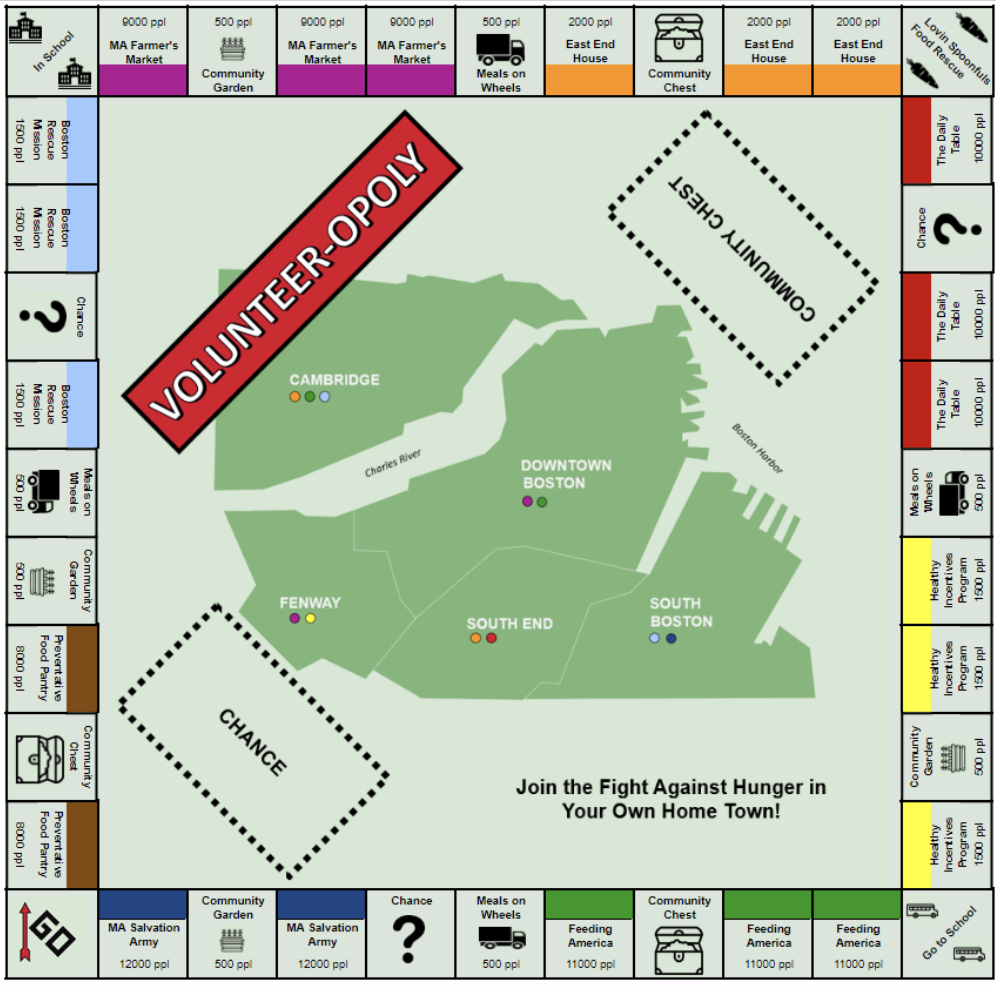
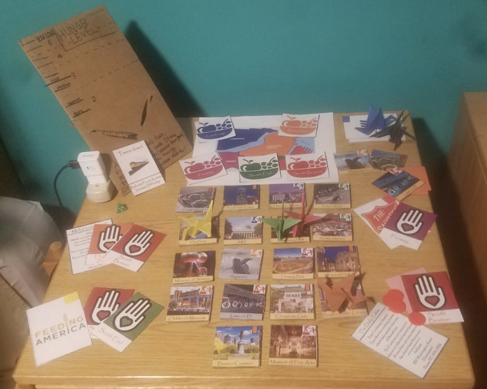

Team member names: Julie, Kate, Sarah, and Michael
Technique we want to use: data games, building off a past sketch to develop a more fleshed out idea that can actually be implemented.
Audience of the story: our ideal audience is a family of 4-5 people with a mother, father, and young children. The children should be 10+ and the family ideally would have the opportunity to go together to the same volunteering place or community service entity to help fight hunger in their area (city, state, etc.). We tried our game with a family that Rahul connected us with.
Our goal(s): by playing the game, we want people to learn about the different organizations that they can volunteer at in order to help fight hunger in Cambridge and Boston. The ultimate goal is to encourage people to take a more active role in volunteering for this cause.
Context of the story: we are using a monopoly-like game board to help draw attention to a very important issue. The board and the game mechanics are driven by USDA budget spending data, food bank/charities donations data, and other food insecurity data. By playing the game, people can learn about how to volunteer in different organizations in their community.
The Sketch:
We used the mechanics and ideas of Monopoly, but we changed the meaning behind the spaces and rules in a way that represented the data well. The list of rules and instructions are detailed in the paragraphs below.
The Greater Boston Area is home to almost 70,000 people who are both food insecure (meaning they lack the ability to access enough food for their daily nutritional requirements) and they do not qualify for federal aid (programs like SNAP, WIC, etc.). The purpose of this game is to visit the charities on the board, so that you can help them feed the hungry people in Boston. The goal is eliminate hunger from the board within 4 rounds.
Board Setup
- Choose one player to be the “Mayor” of Boston. It is the Mayor’s job to monitor the levels of the hungry citizens across Boston. The Mayor should begin the game by placing chips on each Boston district to represent the number of hungry people (see table 1 below).
Note, the chips have the following value:
Red = 10,000 ppl; Yellow = 1,000 ppl; Blue = 500 ppl
- Shuffle the orange “Chance” card deck, and the yellow “Community Chest” card deck, and place both on the designated spots on the board.
- Place a green die on the “Lovin’ Spoonfuls Food Rescue” square, with the 1 facing up. This spot will be explained in the game-play section of the instructions.
- Have the Mayor pass out 2 green chips “Volunteer Chips” to each player. These chips will be explained in the game-play section of the instructions.
- Place the Charity Property cards on the side of the board for easy reference throughout the game.
- Have each player write their initials on one of the white tokens, and place all white tokens on “Go”.
Table 1: Neighborhoods and Hunger
|
Neighborhood |
Number of Hungry People |
|
Cambridge |
28,000 |
|
Fenway |
10,500 |
| Downtown |
12,500 |
| South End |
6,500 |
| South Boston |
9,500 |
Game-Play
- Role the die to see which player goes first
- Role the pair of white dice, and advance your white token that many spaces.
If you land on a Charity space:
- Choose any neighborhood in Boston with the corresponding color dot as the Charity you landed on, and remove the number of hungry people from that neighborhood as indicated on the bottom of the Charity’s square. For example, if you land on “Feeding America” you can remove 11,000 hungry people from either Cambridge or Downtown Boston.
- At any point during your turn, you may choose to put down (and permanently leave there) one of your blue “volunteer” chips on the property you landed on, to indicate you want to volunteer there. Now, every time anyone lands on this space, it will pay out a higher number of people fed. Read aloud the charity’s property card to find out the bonus, and to learn about that organization. Different players can stack up volunteer bonuses on the same square if they later land on it.
If you land on a different space, look at the Specialty Space instructions to see what action you should take. Players can also land on chance or community chest cards, which can either be detrimental or beneficial to the volunteering effort.
- If you rolled doubles on step 1, you may roll and go again. Otherwise your turn is over, and pass the dice to the next player.
- When your white token passes “GO”, do the following:
- Collect 2 more blue volunteer chips
- Advance the die on “Lovin’ Spoonfuls Food Rescue” by 1.
- After you have passed GO on your 5th time (you have gone around the board 4 times), you are out of the game and must wait for the other players to finish.
The board game, property cards, chance cards, and community chest cards are displayed in figures in the following pages.
Figure 1: Volunteer-opoly Board

Figure 2: Property Cards (Front and Back of Cards)


Figure 3: Chance Cards

Figure 4: Community Chest Cards

- Below is a link to the presentation for more details: https://docs.google.com/presentation/d/1IHHI1bYkWj2dfPBWUu0ge9TZj4XXpz6NoL2XA20gctI/edit#slide=id.g56ebdea96b_0_0
Assessment of the game:
- In order to assess the impact of the game, we are going to use a pre and post-survey that participants will fill out. We hope that people will retain the information presented to them within the game and that they obtain a better understanding of food insecurity and other related issues within their community. The surveys ask certain questions to determine if these goals were met. A “success” for us would be that the players learned about fighting hunger, the details of the problem, and how they can help at different organizations to truly make an impact in the lives of others.
- The game was tested by a family that Rahul provided as a contact. Overall, the play test went alright. The kids and the parent seemed to enjoy the game and learn some new information, yet the kids seemed bored at times. The volunteer chips gave a sense of choice, but using chips for everything may have been a bit confusing. That being said, the parent was excited about the volunteering opportunities and ideas to do with her kids. After talking with the family about the game, one main recommendation was to make the game more discretized, such as choosing what you can do at a particular location or organization and how long (number of hours) you choose to spend there.
- Please use the link seen below for a full list of the survey questions:
https://docs.google.com/document/d/1XIF4ql6CLKZzX-T-n82g9OkY7XciQwZEk6AzptCLiw0/edit?ts=5cd6db83
- Reflection: Even though we did not have great results, it does not mean that the game failed, and we can use this as a learning opportunity in which we act upon feedback from our audience. For instance, this has shown us that rule sets for games are very difficult to write and that we most likely needed to place greater emphasis on the gameplay and less focus on the data to get a more positive result. That being said, we believe that if we target an older audience (middle school to high school kids), keep the same goals, and develop a more new game, then the game would be received better. For example, older kids would be more capable of acting upon any intentions of volunteering that may arise.
-
- Based on this reflection, we created a new game based upon the premise of Forbidden Island. We titled this game “Food Desert”. We addressed the feedback given to us by having a more collaborative game with an older audience.
-
-
- In order to make this game we created the following items: 18 points of interest tiles, 18 points of interest hunger cards, one hunger meter with slider, 25 volunteer cards, 5 disaster cards, 6 charity role cards, 5 city volunteer crests, a color coded map, and origami crane player pieces colored according to the colors of the corresponding charity logo. Please see the picture below for what the game looks like.
-

-
-
- The end goal of this game is to feed the city of Boston, by getting volunteers in each part of the city. The terminology of the game is carefully chosen so that when players strategize, they talk about volunteering, their home city, and the charity organizations that they are playing. This is in contrast to monopoly, where there was very little player choice, and thus there was little discussion between players about what to do. Part of the playtesting feedback for this new game was that having the game be collaborative was a good decision, because it keeps goodwill between the players. During the playtest, the huge difference between food pantries and all other charities meant that the players only ever cared about food pantries. This difference has been artificially reduced, in order to provide game balance, and stress the importance of all these programs
-
————————————————————————————————————————–
Data Used:
- Food stamp monthly budget for single person
- Pounds of food donated to the Greater Boston Food Bank by donation type (food bank, soup kitchen, after school programs, etc.)
- Meals on Wheels food donated, scaled to city of Boston population
- General statistics from food rescue organizations and shelters
- Weekly meal data from the USDA
References:
- http://www.tkcs-collins.com/truman/monopoly/monopoly.shtml#Markov
- https://mydss.mo.gov/food-assistance/food-stamp-program/income-limits
- https://www.cnpp.usda.gov/sites/default/files/usda_food_plans_cost_of_food/CostofFoodJul2014.pdf
- https://www2.bostonglobe.com/metro/2017/05/02/want-healthy-food-much-mass-hard-get/6tdKRBgRmyjprBPRDvl31H/story.html
- https://www.businessinsider.com/what-is-meals-on-wheels-2017-3#we-cant-spend-money-on-programs-just-because-they-sound-good-he-said-were-not-going-to-spend-money-on-programs-that-cannot-show-that-they-actually-deliver-the-promises-that-weve-made-to-people-8
- http://gbfb.org/pub/annual-report-2018/index.html?page=14
- https://www.massoptions.org/massoptions/find-community-long-term-supports-and-services/bcommunity-services–supports-available-through-state-agencies/food-and-nutrition/
- https://www.boston.gov/departments/food-access/volunteer-local-anti-hunger-nonprofit